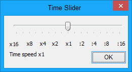

This command shows a window with a slider that allows you to inspect and dynamically alter the time flow speed. The display is refreshed once per second, and you can adjust the time stretch factor by clicking and dragging the slider:

The time stretching factors shown below the slider are related to the coarse (default) time resolution. If the fine time adjustment flag is set (see Timing > Time Stretching), the leftmost slider position corresponds to approximately x2 and the rightmost to approximately :2.